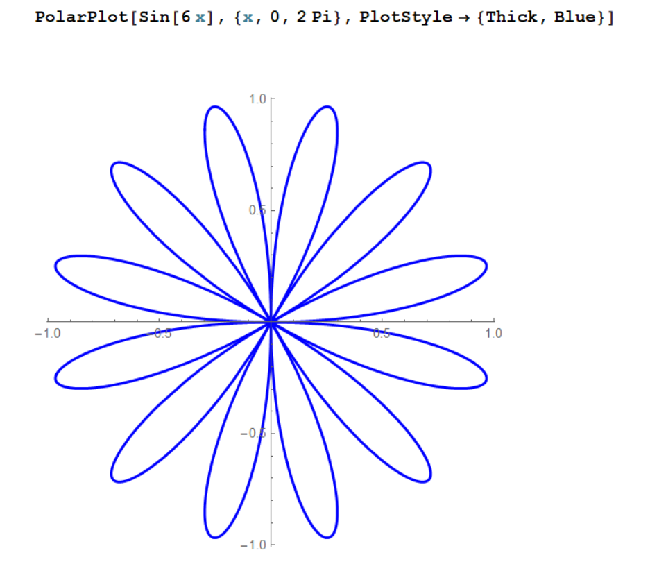
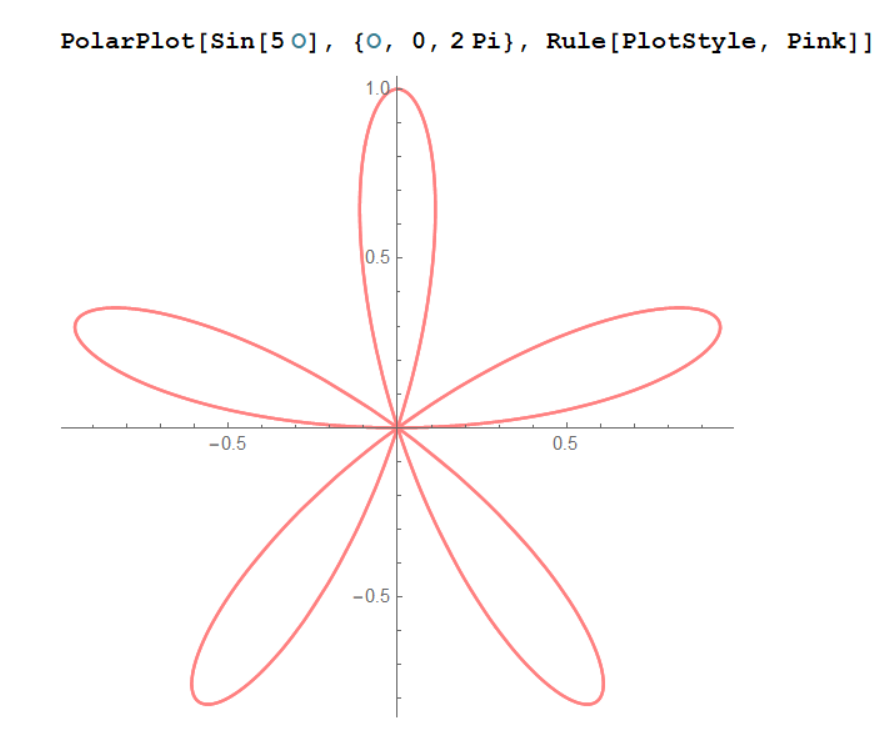

About
Greetings, I'm Arushi Chandola. As a CS undergrad, I explore the intersection of Physics, Science, Maths, and Code — through visuals, creative experimentation, and clear communication.
Visual


Greetings, I'm Arushi Chandola. As a CS undergrad, I explore the intersection of Physics, Science, Maths, and Code — through visuals, creative experimentation, and clear communication.